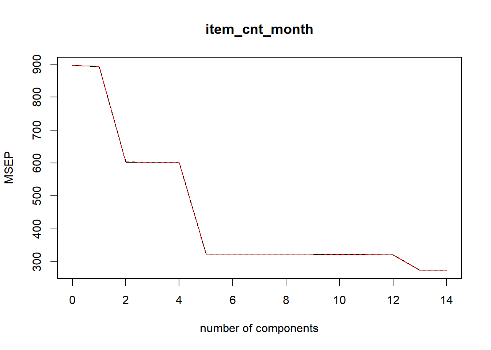
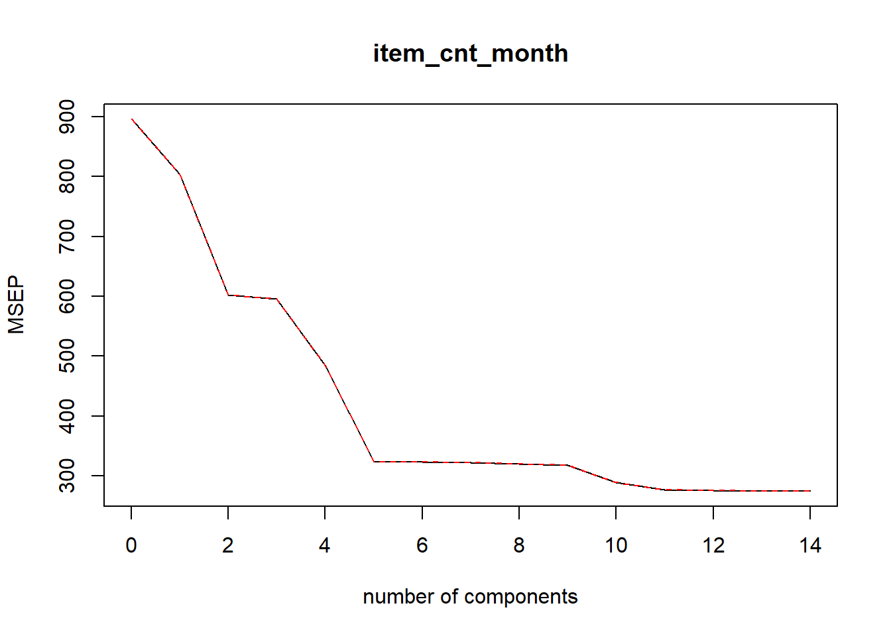

MSBA ML2 TP2 Team 11
Load packages and read files
library(tidyverse)## Warning: package 'tidyverse' was built under R version 3.6.3## -- Attaching packages --------------------------------------- tidyverse 1.3.0 --## v ggplot2 3.3.0 v purrr 0.3.3
## v tibble 3.0.0 v dplyr 0.8.5
## v tidyr 1.0.2 v stringr 1.4.0
## v readr 1.3.1 v forcats 0.5.0## Warning: package 'ggplot2' was built under R version 3.6.3## Warning: package 'tibble' was built under R version 3.6.3## Warning: package 'tidyr' was built under R version 3.6.3## Warning: package 'purrr' was built under R version 3.6.3## Warning: package 'dplyr' was built under R version 3.6.3## Warning: package 'forcats' was built under R version 3.6.3## -- Conflicts ------------------------------------------ tidyverse_conflicts() --
## x dplyr::filter() masks stats::filter()
## x dplyr::lag() masks stats::lag()library(data.table)## Warning: package 'data.table' was built under R version 3.6.3## data.table 1.12.8 using 6 threads (see ?getDTthreads). Latest news: r-datatable.com##
## Attaching package: 'data.table'## The following objects are masked from 'package:dplyr':
##
## between, first, last## The following object is masked from 'package:purrr':
##
## transposelibrary(lubridate)## Warning: package 'lubridate' was built under R version 3.6.3##
## Attaching package: 'lubridate'## The following objects are masked from 'package:data.table':
##
## hour, isoweek, mday, minute, month, quarter, second, wday, week, yday, year## The following objects are masked from 'package:dplyr':
##
## intersect, setdiff, union## The following objects are masked from 'package:base':
##
## date, intersect, setdiff, unionlibrary(magrittr)##
## Attaching package: 'magrittr'## The following object is masked from 'package:purrr':
##
## set_names## The following object is masked from 'package:tidyr':
##
## extractlibrary(Matrix)##
## Attaching package: 'Matrix'## The following objects are masked from 'package:tidyr':
##
## expand, pack, unpacklibrary(xgboost)## Warning: package 'xgboost' was built under R version 3.6.3##
## Attaching package: 'xgboost'## The following object is masked from 'package:dplyr':
##
## slicelibrary(parallel)
library(pls)## Warning: package 'pls' was built under R version 3.6.2##
## Attaching package: 'pls'## The following object is masked from 'package:stats':
##
## loadingslibrary(glmnet)## Warning: package 'glmnet' was built under R version 3.6.2## Loaded glmnet 3.0-2library(splines)
library(gam)## Warning: package 'gam' was built under R version 3.6.2## Loading required package: foreach## Warning: package 'foreach' was built under R version 3.6.3##
## Attaching package: 'foreach'## The following objects are masked from 'package:purrr':
##
## accumulate, when## Loaded gam 1.16.1set.seed(5072)Read file
sales_train <- read.csv("sales_train.csv") # the training set. Daily historical data from January 2013 to October 2015.
test_input <- read.csv("test.csv")
item_categories <- read.csv("item_categories.csv") # supplemental information about the items categories.
items <- read.csv("items.csv") # supplemental information about the items/products.
shops <- read.csv("shops.csv") # supplemental information about the shops.- Merge Dataset 1.1 Merge train dataset
train <- sales_train %>%
left_join(items,by = "item_id")
train$item_name <- NULL1.2 Merge test
test <- test_input %>%
left_join(items, by = "item_id")
test$item_name <- NULL
test$ID <- NULL
test$date_block_num <- 34- Check data quality 2.1 Check data quality - missing value
colSums(is.na(train))## date date_block_num shop_id item_id item_price item_cnt_day item_category_id
## 0 0 0 0 0 0 0colSums(is.na(test))## shop_id item_id item_category_id date_block_num
## 0 0 0 0There are no missing value for both training and testing datasets
2.2 Check data quality - negative value
negative <- filter(train, item_cnt_day < 0 | item_price <= 0)
count(negative)## # A tibble: 1 x 1
## n
## <int>
## 1 7357train <- filter(train, item_cnt_day >= 0 & item_price > 0)
dim(train)## [1] 2928492 7item_cnt_day for some rows is “-1”, which I don’t know wheather it’s caused by typing error or there is special meaning for this “-1”. Considerd the count of all the invalid data is only 7357, which is only 0.25% of total training data.Hence, I decided to delete those invalid data.Now left 2928492 rows of data.
2.3.1 Check data quality - duplicates data in supplemental datasets
shops[duplicated(shops$shop_name),]## [1] shop_name shop_id
## <0 rows> (or 0-length row.names)items[duplicated(items$item_name),]## [1] item_name item_id item_category_id
## <0 rows> (or 0-length row.names)item_categories[duplicated(item_categories$item_category_name),]## [1] item_category_name item_category_id
## <0 rows> (or 0-length row.names)There are no duplicates data in “shops”, “items”, and “item_categories” tables which means that for each shop_id, item_id, item_categories_id, they are referring to different shop. item and item’ categories.
2.3.2 Check data quality - duplicates data in training dataset
train[duplicated(train),]## date date_block_num shop_id item_id item_price item_cnt_day item_category_id
## 76764 05.01.2013 0 54 20130 149 1 40
## 1431759 23.02.2014 13 50 3423 999 1 23
## 1492996 23.03.2014 14 21 3423 999 1 23
## 1667713 01.05.2014 16 50 3423 999 1 23
## 1861712 12.07.2014 18 25 3423 999 1 23
## 2193121 31.12.2014 23 42 21619 499 1 37train <- train[!duplicated(train),]However, there are 6 duplicated rows in training dataset. Therefore I deleted these duplicated rows.
- Data Preprocessing 3.1 Create dates column
train$date <- dmy(train$date)
train$year <- year(train$date)
train$month <- month(train$date)
test$year <- 2015
test$month <- 113.2 Merge training and testing datasets
sub_train <- train[,c("date_block_num","shop_id","item_id","item_category_id", "year", "month","item_price","item_cnt_day")]
test$item_cnt_day <- 0
test$item_price <- 0
sub_test <- test[,c("date_block_num","shop_id","item_id","item_category_id", "year", "month","item_price","item_cnt_day")]
matrix <- rbind(sub_train,sub_test)- Feature engineering 4.1 itsm_price and sales count sumarized by shop_id / item_id
matrix_price <- matrix %>% group_by(shop_id,item_id) %>% summarise(price_mean = mean(item_price),cnt_sum = sum(item_cnt_day)) %>% ungroup()
matrix <- matrix %>% left_join(matrix_price, by = c("shop_id", "item_id"))4.2 itsm_price and sales count sumarized by shop_id
matrix_price1 <- matrix %>% group_by(shop_id) %>% summarise(price_mean_shop = mean(item_price), cnt_sum_shop = sum(item_cnt_day)) %>% ungroup()
matrix <- matrix %>% left_join(matrix_price1, by = c("shop_id"))4.3 itsm_price and sales count sumarized by item_id
matrix_price2 <- matrix %>% group_by(item_id) %>% summarise(price_mean_item = mean(item_price), cnt_sum_item = sum(item_cnt_day)) %>% ungroup()
matrix <- matrix %>% left_join(matrix_price2, by = c("item_id"))4.4 total sale count per month - Prediction Item
matrix_month <- matrix %>% group_by(year, month, shop_id, item_id) %>% summarise(item_cnt_month = sum(item_cnt_day)) %>% ungroup()
matrix <- matrix %>% left_join(matrix_month, by = c("year","month","shop_id","item_id"))- Create validation dataset
train_train <- filter(matrix, date_block_num < 33)
validate <- filter(matrix, date_block_num == 33)We cannot use random sampling the split training and validating datasets here because this is a time series problem, there might be sensonality impact. So, I choose last month in training dataset as my validating dataset.
- Modeling 6.0 Naive Model
lm.fit.naive <- lm(item_cnt_month ~ shop_id + item_id, data = train_train)
summary(lm.fit.naive)##
## Call:
## lm(formula = item_cnt_month ~ shop_id + item_id, data = train_train)
##
## Residuals:
## Min 1Q Median 3Q Max
## -10.32 -6.78 -4.28 -1.10 1636.94
##
## Coefficients:
## Estimate Std. Error t value Pr(>|t|)
## (Intercept) 4.072e+00 4.837e-02 84.169 < 2e-16 ***
## shop_id 3.030e-03 1.086e-03 2.791 0.00526 **
## item_id 3.190e-04 2.785e-06 114.530 < 2e-16 ***
## ---
## Signif. codes: 0 '***' 0.001 '**' 0.01 '*' 0.05 '.' 0.1 ' ' 1
##
## Residual standard error: 29.86 on 2875097 degrees of freedom
## Multiple R-squared: 0.004555, Adjusted R-squared: 0.004554
## F-statistic: 6578 on 2 and 2875097 DF, p-value: < 2.2e-16lm.pred.naive <- predict(lm.fit.naive, newdata = validate)
lm.RMSE.naive <- sqrt(mean((lm.pred.naive - validate$item_cnt_month)^2))
lm.RMSE.naive## [1] 48.184lm.RMSE.naive = 48.184
6.1 Linear regression
lm.fit <- lm(item_cnt_month ~ shop_id + item_id + item_category_id + cnt_sum + cnt_sum_item + cnt_sum_shop + item_price + price_mean, data = train_train)
summary(lm.fit)##
## Call:
## lm(formula = item_cnt_month ~ shop_id + item_id + item_category_id +
## cnt_sum + cnt_sum_item + cnt_sum_shop + item_price + price_mean,
## data = train_train)
##
## Residuals:
## Min 1Q Median 3Q Max
## -734.90 -3.16 -1.87 -0.23 1579.21
##
## Coefficients:
## Estimate Std. Error t value Pr(>|t|)
## (Intercept) 3.817e+00 3.925e-02 97.236 < 2e-16 ***
## shop_id 1.047e-02 6.545e-04 15.996 < 2e-16 ***
## item_id -3.003e-05 1.814e-06 -16.553 < 2e-16 ***
## item_category_id -3.812e-02 6.913e-04 -55.149 < 2e-16 ***
## cnt_sum 3.702e-02 2.350e-05 1575.266 < 2e-16 ***
## cnt_sum_item 3.294e-05 7.866e-07 41.882 < 2e-16 ***
## cnt_sum_shop 9.511e-06 1.294e-07 73.531 < 2e-16 ***
## item_price -1.945e-04 3.623e-05 -5.369 7.92e-08 ***
## price_mean 5.192e-04 3.755e-05 13.826 < 2e-16 ***
## ---
## Signif. codes: 0 '***' 0.001 '**' 0.01 '*' 0.05 '.' 0.1 ' ' 1
##
## Residual standard error: 17.97 on 2875091 degrees of freedom
## Multiple R-squared: 0.6397, Adjusted R-squared: 0.6397
## F-statistic: 6.381e+05 on 8 and 2875091 DF, p-value: < 2.2e-16lm.pred <- predict(lm.fit, newdata = validate)
lm.RMSE <- sqrt(mean((lm.pred - validate$item_cnt_month)^2))
lm.RMSE## [1] 40.82063lm.RMSE = 40.821
6.2 PCR
pcr.fit <- pcr(item_cnt_month ~ ., data = train_train, validation = 'CV')
summary(pcr.fit)## Data: X dimension: 2875100 14
## Y dimension: 2875100 1
## Fit method: svdpc
## Number of components considered: 14
##
## VALIDATION: RMSEP
## Cross-validated using 10 random segments.
## (Intercept) 1 comps 2 comps 3 comps 4 comps 5 comps 6 comps 7 comps 8 comps 9 comps 10 comps 11 comps 12 comps
## CV 29.93 29.88 24.56 24.54 24.53 17.98 17.98 17.98 17.98 17.98 17.97 17.96 17.94
## adjCV 29.93 29.88 24.56 24.54 24.53 17.98 17.98 17.98 17.98 17.98 17.97 17.96 17.94
## 13 comps 14 comps
## CV 16.57 16.57
## adjCV 16.57 16.57
##
## TRAINING: % variance explained
## 1 comps 2 comps 3 comps 4 comps 5 comps 6 comps 7 comps 8 comps 9 comps 10 comps 11 comps 12 comps
## X 94.302 99.35 99.89 100.00 100.00 100.00 100.00 100.00 100.00 100.00 100 100.0
## item_cnt_month 0.314 32.68 32.79 32.84 63.93 63.93 63.93 63.93 63.93 63.97 64 64.1
## 13 comps 14 comps
## X 100.00 100.00
## item_cnt_month 69.38 69.38validationplot(pcr.fit,val.type = 'MSEP')
pcr.pred <- predict(pcr.fit, newdata = validate, ncomp = 5)
pcr.RMSE <- sqrt(mean((pcr.pred - validate$item_cnt_month)^2))
pcr.RMSE## [1] 40.84496According to the plot, 5 is the best component. When ncomp = 5, RMSE for PCR model is 40.845 which is comparable with with linear regression model
6.3 PLS
pls.fit <- plsr(item_cnt_month ~ ., data = train_train, validation = 'CV')
summary(pls.fit)## Data: X dimension: 2875100 14
## Y dimension: 2875100 1
## Fit method: kernelpls
## Number of components considered: 14
##
## VALIDATION: RMSEP
## Cross-validated using 10 random segments.
## (Intercept) 1 comps 2 comps 3 comps 4 comps 5 comps 6 comps 7 comps 8 comps 9 comps 10 comps 11 comps 12 comps
## CV 29.93 28.35 24.55 24.41 22.01 17.98 17.98 17.97 17.9 17.84 17.02 16.63 16.61
## adjCV 29.93 28.35 24.55 24.41 22.01 17.98 17.98 17.97 17.9 17.84 17.02 16.63 16.61
## 13 comps 14 comps
## CV 16.57 16.57
## adjCV 16.57 16.57
##
## TRAINING: % variance explained
## 1 comps 2 comps 3 comps 4 comps 5 comps 6 comps 7 comps 8 comps 9 comps 10 comps 11 comps 12 comps
## X 73.94 99.35 99.87 99.95 100.00 100.00 100.00 100.00 100.00 100.00 100.00 100.00
## item_cnt_month 10.32 32.74 33.48 45.93 63.93 63.93 63.96 64.25 64.49 67.69 69.15 69.24
## 13 comps 14 comps
## X 100.00 107.12
## item_cnt_month 69.38 69.38validationplot(pls.fit,val.type = 'MSEP')
pls.pred <- predict(pls.fit, newdata = validate, ncomp = 5)
pls.RMSE <- sqrt(mean((pls.pred - validate$item_cnt_month)^2))
pls.RMSE## [1] 40.84406According to the plot, 5 is the best component. When ncomp = 5, RMSE for PLS model is 40.844 which is comparable with with linear regression model and PCR model.
6.4 Lasso
x_train <- model.matrix(item_cnt_month~.,train_train)[,-15]
y_train <- train_train$item_cnt_month
x_validate <- model.matrix(item_cnt_month~.,validate)[,-15]
grid <- 10^seq(10, -2, length=100)
lasso.mod <- glmnet(x_train, y_train, alpha = 1,lambda = grid)
cv.out <- cv.glmnet(x_train, y_train, alpha = 1)
bestlam <- cv.out$lambda.min
lasso.pred <- predict(lasso.mod, s = bestlam, newx = x_validate)
lasso.RMSE <- sqrt(mean((lasso.pred - validate$item_cnt_month)^2))
lasso.RMSE## [1] 44.96522Lasso.RMSE = 44.965
6.5 Polynomial Regression
poly.fit1 <- lm(item_cnt_month ~ shop_id + item_id + item_category_id + cnt_sum + I(cnt_sum^2),data = train_train)
poly.fit2 <- lm(item_cnt_month ~ shop_id + item_id + item_category_id + cnt_sum + I(cnt_sum^2) + I(cnt_sum^3),data = train_train)
poly.fit3 <- lm(item_cnt_month ~ poly(cnt_sum,2), data = train_train)
poly.fit4 <- lm(item_cnt_month ~ poly(cnt_sum,3), data = train_train)
poly.pred1 <- predict(poly.fit1, newdata = validate)
poly.RMSE1 <- sqrt(mean((poly.pred1 - validate$item_cnt_month)^2))
poly.RMSE1## [1] 40.42792poly.pred2 <- predict(poly.fit2, newdata = validate)
poly.RMSE2 <- sqrt(mean((poly.pred2 - validate$item_cnt_month)^2))
poly.RMSE2## [1] 40.56664poly.pred3 <- predict(poly.fit3, newdata = validate)
poly.RMSE3 <- sqrt(mean((poly.pred3 - validate$item_cnt_month)^2))
poly.RMSE3## [1] 40.48962poly.pred4 <- predict(poly.fit4, newdata = validate)
poly.RMSE4 <- sqrt(mean((poly.pred4 - validate$item_cnt_month)^2))
poly.RMSE4## [1] 40.62866The RMSE for the first poly model is 40.428, for the second poly model is 40.567, for the third poly model is 40.490, for the last poly model is 40.627. Based on this, I think adding polynomial features is an effective way to improve model performance.
6.7 Step Function
step.fit <- lm(item_cnt_month ~ cut(cnt_sum,4), data = train_train)
step.pred <- predict(step.fit, newdata = validate)
step.RMSE <- sqrt(mean((step.pred - validate$item_cnt_month)^2))
step.RMSE## [1] 41.09172Step.RMSE = 41.091
6.6 Spline Line
cntlims=range(matrix$cnt_sum)
cnt.grid=seq(from=cntlims[1],to=cntlims[2])
sp.fit=lm(item_cnt_month ~ bs(cnt_sum,knots=c(6,16,48)),data=train_train)
sp.pred=predict(sp.fit,newdata = validate,se=T)
sp.RMSE <- sqrt(mean((sp.pred$fit - validate$item_cnt_month)^2))
sp.RMSE## [1] 40.60391sp.RMSE = 40.604
6.7 Natural Spline Line
nsp.fit <- lm(item_cnt_month ~ ns(cnt_sum,df=4),data=train_train)
nsp.pred <- predict(nsp.fit,newdata = validate,se=T)
nsp.RMSE <- sqrt(mean((nsp.pred$fit - validate$item_cnt_month)^2))
nsp.RMSE## [1] 40.57669nsp.RMSE = 40.695
6.8 XG boost
trainMatrix <- sparse.model.matrix(item_cnt_month ~ shop_id + item_id + item_category_id + cnt_sum + cnt_sum_item + cnt_sum_shop + item_price + price_mean,
data = train_train,
contrasts.arg = c('shop_id', 'item_id'),
sparse = TRUE, sci = FALSE)
#Create input for xgboost
trainDMatrix <- xgb.DMatrix(data = trainMatrix, label = train_train$item_cnt_month)
testMatrix <- sparse.model.matrix(item_cnt_month ~ shop_id + item_id + item_category_id + cnt_sum + cnt_sum_item + cnt_sum_shop + item_price + price_mean,
data = validate,
contrasts.arg = c('shop_id', 'item_id'),
sparse = TRUE, sci = FALSE)
#Create input for xgboost
testDMatrix <- xgb.DMatrix(data = testMatrix, label = validate$item_cnt_month)
params <- list(booster = "gbtree",
objective = "reg:linear",
eval_metric = "rmse",
eta = 0.5, # no need more complexity
min_child_weight = 5,
#colsample_bytree = 1,
gamma = 0.9,
alpha = 1.0,
max_depth = 10, # no nead more depth
subsample = 1,
print_every_n = 20
)
# parallel calculation
N_cpu = parallel::detectCores()
#Cross-validation
xgb.tab <- xgb.cv(data = trainDMatrix,
params = params,
maximize = FALSE, nrounds = 1000,
nthreads = N_cpu, nfold = 5, early_stopping_round = 10)## [1] train-rmse:19.546756+0.049320 test-rmse:19.603422+0.244142
## Multiple eval metrics are present. Will use test_rmse for early stopping.
## Will train until test_rmse hasn't improved in 10 rounds.
##
## [2] train-rmse:15.370375+0.042978 test-rmse:15.469257+0.226583
## [3] train-rmse:13.969179+0.068398 test-rmse:14.107797+0.199092
## [4] train-rmse:13.507743+0.043422 test-rmse:13.670964+0.198456
## [5] train-rmse:13.328993+0.041426 test-rmse:13.512082+0.199727
## [6] train-rmse:13.203841+0.038259 test-rmse:13.411274+0.198344
## [7] train-rmse:13.095159+0.049431 test-rmse:13.334369+0.178840
## [8] train-rmse:13.003484+0.048060 test-rmse:13.271960+0.172688
## [9] train-rmse:12.967588+0.052586 test-rmse:13.251971+0.172111
## [10] train-rmse:12.934268+0.055301 test-rmse:13.225437+0.174103
## [11] train-rmse:12.903292+0.046836 test-rmse:13.200810+0.178441
## [12] train-rmse:12.865709+0.050013 test-rmse:13.168251+0.173027
## [13] train-rmse:12.833255+0.036317 test-rmse:13.141996+0.183405
## [14] train-rmse:12.796791+0.033591 test-rmse:13.116102+0.181819
## [15] train-rmse:12.775648+0.034616 test-rmse:13.100814+0.179337
## [16] train-rmse:12.756330+0.034025 test-rmse:13.093433+0.180150
## [17] train-rmse:12.730663+0.029300 test-rmse:13.073455+0.183450
## [18] train-rmse:12.709873+0.023678 test-rmse:13.056097+0.187323
## [19] train-rmse:12.696087+0.021917 test-rmse:13.044220+0.188179
## [20] train-rmse:12.679608+0.023752 test-rmse:13.032216+0.184646
## [21] train-rmse:12.660747+0.026417 test-rmse:13.019279+0.183249
## [22] train-rmse:12.646838+0.030303 test-rmse:13.013158+0.181826
## [23] train-rmse:12.637393+0.030491 test-rmse:13.006599+0.180928
## [24] train-rmse:12.624470+0.031028 test-rmse:13.002936+0.185996
## [25] train-rmse:12.612982+0.033440 test-rmse:12.997451+0.187317
## [26] train-rmse:12.605277+0.038492 test-rmse:12.992640+0.185128
## [27] train-rmse:12.594839+0.036955 test-rmse:12.988660+0.188778
## [28] train-rmse:12.586889+0.038323 test-rmse:12.984754+0.186649
## [29] train-rmse:12.577362+0.037422 test-rmse:12.979328+0.187443
## [30] train-rmse:12.566710+0.040809 test-rmse:12.971907+0.185593
## [31] train-rmse:12.554587+0.042741 test-rmse:12.968987+0.180104
## [32] train-rmse:12.545877+0.043913 test-rmse:12.968874+0.184595
## [33] train-rmse:12.541454+0.043343 test-rmse:12.965781+0.184874
## [34] train-rmse:12.535847+0.043154 test-rmse:12.965421+0.184397
## [35] train-rmse:12.529099+0.045393 test-rmse:12.960612+0.181314
## [36] train-rmse:12.520011+0.044177 test-rmse:12.952402+0.182776
## [37] train-rmse:12.515692+0.045537 test-rmse:12.948889+0.181863
## [38] train-rmse:12.507500+0.043734 test-rmse:12.943775+0.181068
## [39] train-rmse:12.499929+0.045254 test-rmse:12.942259+0.183174
## [40] train-rmse:12.495012+0.042695 test-rmse:12.940770+0.184573
## [41] train-rmse:12.489423+0.041853 test-rmse:12.938203+0.185108
## [42] train-rmse:12.484597+0.040335 test-rmse:12.935749+0.185514
## [43] train-rmse:12.478723+0.039740 test-rmse:12.936523+0.185649
## [44] train-rmse:12.471679+0.038849 test-rmse:12.935009+0.182967
## [45] train-rmse:12.464509+0.043025 test-rmse:12.936028+0.184835
## [46] train-rmse:12.458827+0.042136 test-rmse:12.935379+0.185846
## [47] train-rmse:12.454937+0.041057 test-rmse:12.933824+0.187759
## [48] train-rmse:12.448736+0.042668 test-rmse:12.931735+0.186881
## [49] train-rmse:12.444875+0.042915 test-rmse:12.931608+0.186943
## [50] train-rmse:12.440371+0.042873 test-rmse:12.931063+0.187505
## [51] train-rmse:12.435212+0.041467 test-rmse:12.929420+0.187286
## [52] train-rmse:12.431794+0.040011 test-rmse:12.927168+0.188723
## [53] train-rmse:12.427293+0.038374 test-rmse:12.926539+0.189315
## [54] train-rmse:12.424321+0.037517 test-rmse:12.924745+0.189054
## [55] train-rmse:12.422070+0.036603 test-rmse:12.923588+0.189431
## [56] train-rmse:12.418459+0.038451 test-rmse:12.923452+0.189206
## [57] train-rmse:12.415186+0.038262 test-rmse:12.921618+0.188575
## [58] train-rmse:12.411867+0.039869 test-rmse:12.922218+0.190568
## [59] train-rmse:12.408806+0.040103 test-rmse:12.919527+0.189940
## [60] train-rmse:12.405645+0.040450 test-rmse:12.917803+0.190298
## [61] train-rmse:12.401470+0.041174 test-rmse:12.918213+0.190529
## [62] train-rmse:12.396473+0.039784 test-rmse:12.918895+0.190083
## [63] train-rmse:12.394247+0.038955 test-rmse:12.918991+0.190576
## [64] train-rmse:12.390384+0.038468 test-rmse:12.918991+0.189783
## [65] train-rmse:12.388263+0.039099 test-rmse:12.917222+0.189362
## [66] train-rmse:12.385035+0.038927 test-rmse:12.916277+0.190005
## [67] train-rmse:12.381895+0.037726 test-rmse:12.916842+0.189315
## [68] train-rmse:12.378970+0.038656 test-rmse:12.916279+0.189751
## [69] train-rmse:12.375874+0.039673 test-rmse:12.916908+0.191362
## [70] train-rmse:12.373886+0.039950 test-rmse:12.918260+0.193079
## [71] train-rmse:12.370197+0.039198 test-rmse:12.919561+0.191024
## [72] train-rmse:12.367929+0.040660 test-rmse:12.919212+0.191033
## [73] train-rmse:12.365888+0.039751 test-rmse:12.918478+0.191161
## [74] train-rmse:12.363242+0.040806 test-rmse:12.917426+0.190943
## [75] train-rmse:12.361893+0.040598 test-rmse:12.917000+0.191073
## [76] train-rmse:12.360482+0.040727 test-rmse:12.916088+0.190888
## [77] train-rmse:12.358545+0.041227 test-rmse:12.915067+0.190700
## [78] train-rmse:12.355815+0.040484 test-rmse:12.914101+0.190721
## [79] train-rmse:12.352152+0.039973 test-rmse:12.914471+0.190495
## [80] train-rmse:12.350023+0.040161 test-rmse:12.914572+0.191094
## [81] train-rmse:12.348282+0.040664 test-rmse:12.915194+0.192171
## [82] train-rmse:12.345437+0.042401 test-rmse:12.915889+0.193975
## [83] train-rmse:12.344152+0.042366 test-rmse:12.915636+0.193316
## [84] train-rmse:12.342333+0.042708 test-rmse:12.916370+0.193208
## [85] train-rmse:12.340391+0.042540 test-rmse:12.916325+0.192110
## [86] train-rmse:12.338299+0.043236 test-rmse:12.915974+0.191599
## [87] train-rmse:12.336072+0.043731 test-rmse:12.915589+0.191905
## [88] train-rmse:12.334011+0.043027 test-rmse:12.915847+0.191846
## Stopping. Best iteration:
## [78] train-rmse:12.355815+0.040484 test-rmse:12.914101+0.190721#Best Number of iterations
num_iterations = xgb.tab$best_iteration
# Train the model with optimized n_round
xgboost_tree <- xgb.train(data = trainDMatrix
, param = params
, maximize = TRUE, evaluation = 'rmse', nrounds = num_iterations)
# Visualize features importances
importance <- xgb.importance(feature_names = colnames(trainMatrix), model = xgboost_tree)
library(Ckmeans.1d.dp)## Warning: package 'Ckmeans.1d.dp' was built under R version 3.6.3xgb.ggplot.importance(importance_matrix = importance)
# Prediction
pred_tree <- predict(xgboost_tree, testDMatrix)
XGboost.RMSE <- sqrt(mean((pred_tree - validate$item_cnt_month)^2))
XGboost.RMSE## [1] 42.15081XGboost.RMSE = 42.02
- Final Model Based all modeling discussion above, Linear Regression, PCR, PLS and Spline lines have low RMSE. Choose PCR as my final model. Consiered the feature importance ranking from XGboost, only keep cnt_sum, item_price, item_category_id and cnt_sum_shop in the final model.
Considered there are more than 10 features, use PCR model to select features rather than manual selection. The number of principal components, to incorporate in the model, is chosen by cross-validation (cv).Also, PCR is suitable when the data set contains highly correlated predictors as our model.
train_final <- filter(matrix, date_block_num != 34)
test_final <- filter(matrix, date_block_num == 34)
final.fit <- pcr(item_cnt_month ~ cnt_sum + item_price + item_category_id + cnt_sum_shop, data = train_final, validation = 'CV')
validationplot(final.fit,val.type = 'MSEP')
final.pred <- predict(final.fit, newdata = test_final, ncomp = 3)